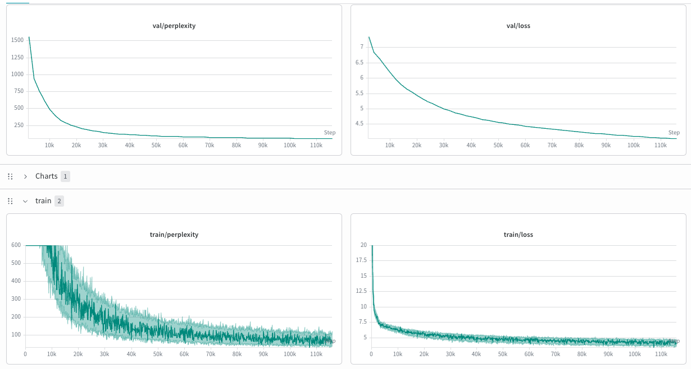

From-scratch GPT-2-style decoder · PyTorch + tiktoken · trained on WikiText
| Model | GPT-2-style decoder, built from scratch (~30M params): learned token + positional embeddings → pre-norm Transformer blocks (causal MHA + 4× GELU FFN) → final LayerNorm → LM head (optional weight tying) |
|---|---|
| Tokenizer | tiktoken gpt2 BPE (~50K vocab) |
| Data | WikiText-103; documents EOS-joined, sliding-window next-token pairs (split by document, not random window, to avoid val leakage). ~115K steps/epoch at the run's batch size; trained several epochs (checkpoints epoch0–epoch3), some runs resumed from a checkpoint |
| Objective | next-token cross-entropy on every position |
| Success metric | validation perplexity = exp(val cross-entropy) — the effective number of equally-likely tokens weighed per step (lower = more confident) |
| Logging | wandb + checkpoints/metrics.csv; qualitative peeks in checkpoints/peek.txt |
The from-scratch GPT has no instruction behavior to eyeball, so the read is fluency: free-running samples
should go from incoherent → repetitive → coherent English as the loss drops. Two fixed peek prompts were
generated every 500 steps: "The earth is not flat because" and
"King minus male plus female equals".
checkpoints/peek.txt (resumed/converged checkpoint)From looping non-sense to grammatical, fluent English with local coherence but semantic drift — exactly the profile expected of a ~30M model (small + data-limited; the distribution is fluent but "mushy", so it wanders over longer spans).

| Point | Perplexity | Source |
|---|---|---|
| Random init (theoretical) | ≈ 50,257 (loss ≈ 10.8) | ≈ vocab size — model uniform over all tokens |
| Start of epoch 0 (val) | ~1500 (val loss ~7.3) | wandb val/perplexity |
| ~60% epoch 0 | ppl 94.9 (loss 4.55) | training console; peek "female 's female 's…" |
| End of epoch 0 (val) | ~100 (val loss ~4.3) | wandb val/perplexity |
| Converged (resumed / continued) | ≈ 26–33 | metrics.csv resume starts 32.60; a resumed run hit 26.19 @ step 2000 |
| Reference: GPT-2 on WikiText-103 | ≈ 18–20 | published — our ~30M lands in GPT-2-small's neighborhood |
The chart above is the first epoch only; the model was later resumed from a checkpoint
and improved further (down to ppl ≈ 26–33). That's also why checkpoints/metrics.csv is only an 8-step
fragment whose step 0 already sits at ppl 32.60 — it's from a resumed run, capturing the converged plateau, not this descent.
Summary lives in OVERVIEW.md §3. Live curves: Weights & Biases (1-epoch run id 6m18gg26, project llm-from-scratch).